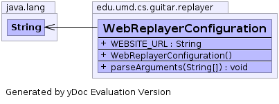

edu.umd.cs.guitar.replayer.sel.NewGReplayerConfiguration
edu.umd.cs.guitar.replayer.WebReplayerConfiguration
edu.umd.cs.guitar.replayer.sel.NewGReplayerConfiguration
edu.umd.cs.guitar.replayer.WebReplayerConfiguration
|
|||||||||
| PREV CLASS NEXT CLASS | FRAMES NO FRAMES | ||||||||
| SUMMARY: NESTED | FIELD | CONSTR | METHOD | DETAIL: FIELD | CONSTR | METHOD | ||||||||
java.lang.Object
public class WebReplayerConfiguration
Class contains the runtime configurations of JFC GUITAR Ripper

| Field Summary | |
|---|---|
java.lang.String |
WEBSITE_URL
|
| Fields inherited from class edu.umd.cs.guitar.replayer.sel.NewGReplayerConfiguration |
|---|
ARGUMENT_LIST, cmd, CONFIG_FILE, DELAY, EFG_FILE, GUI_FILE, GUI_STATE_FILE, INITIAL_WAITING_TIME, LOG_FILE, opts, TESTCASE |
| Constructor Summary | |
|---|---|
WebReplayerConfiguration()
|
|
| Method Summary | |
|---|---|
void |
parseArguments(java.lang.String[] args)
|
| Methods inherited from class java.lang.Object |
|---|
clone, equals, finalize, getClass, hashCode, notify, notifyAll, toString, wait, wait, wait |
| Field Detail |
|---|
public java.lang.String WEBSITE_URL
| Constructor Detail |
|---|
public WebReplayerConfiguration()
| Method Detail |
|---|
public void parseArguments(java.lang.String[] args)
throws org.apache.commons.cli.ParseException
parseArguments in class edu.umd.cs.guitar.replayer.sel.NewGReplayerConfigurationorg.apache.commons.cli.ParseException
|
|||||||||
| PREV CLASS NEXT CLASS | FRAMES NO FRAMES | ||||||||
| SUMMARY: NESTED | FIELD | CONSTR | METHOD | DETAIL: FIELD | CONSTR | METHOD | ||||||||